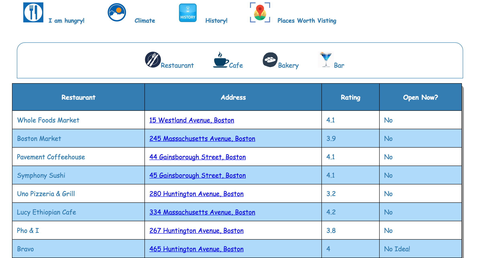

I am Hungry!
Feature Screenshots
Restaurants:

Bakery:
Bar:

Cafe:
As for the page with geolocation, based on latitude and longitude this page fetched data
related to restaurants, cafes, bakeries and bars near by the entered latitude and longitude.
View Source
View Source